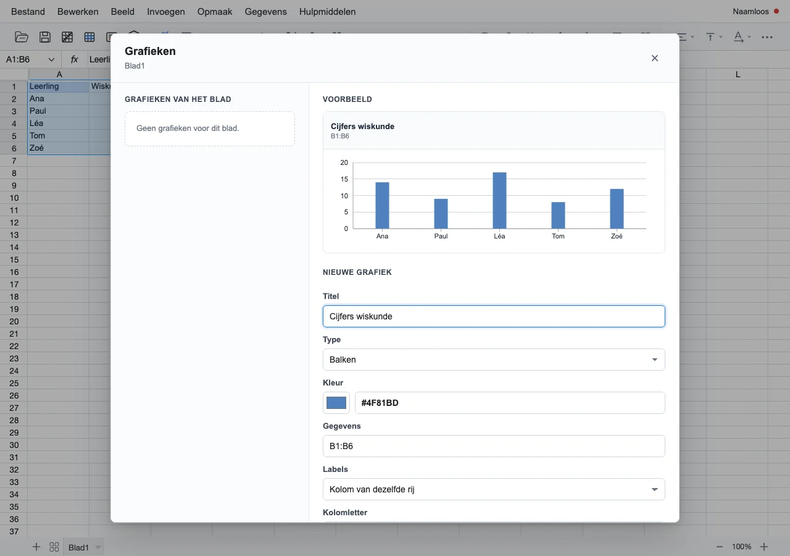
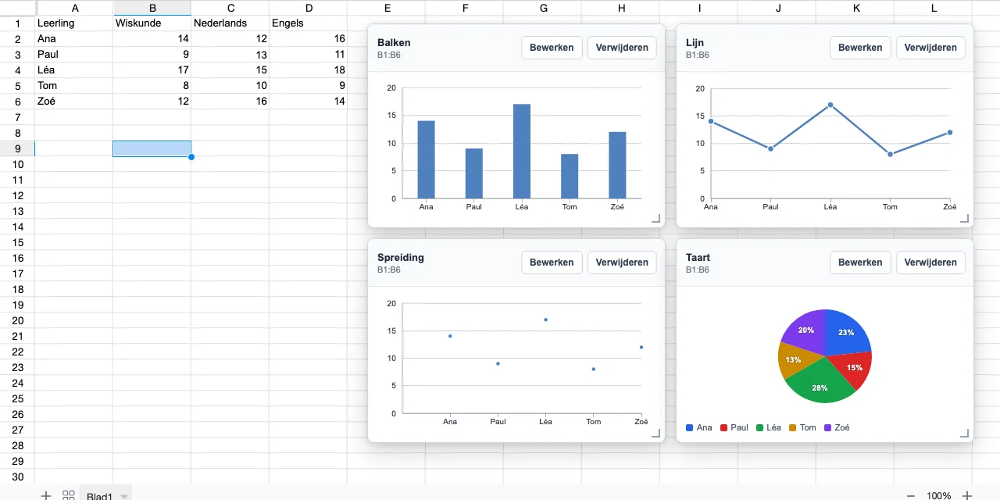
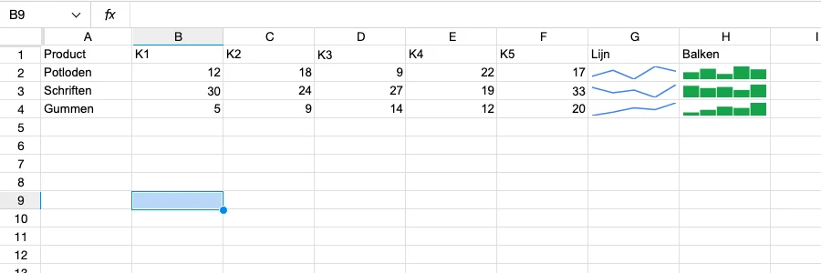

Grafieken en sparklines
Een grafiek maken
- De gegevens selecteren.
- of Invoegen › Grafiek invoegen.
- Het type en de opties kiezen; het voorbeeld volgt.
- Toevoegen, dan Sluiten.

| Selectie | Opgevat als |
|---|---|
| een kolom of rij getallen | de gegevens |
| twee kolommen | labels in de eerste, gegevens in de tweede |
| twee rijen | labels in de eerste, gegevens in de tweede |
| twee losse kolommen, gekozen met Ctrl | hetzelfde |
Een grafiek toont één reeks: een rij of kolom gegevens. Cellen zonder getal, zoals een kop, worden overgeslagen.
Typen
| Type | Voor | Labels |
|---|---|---|
| Balken | vergelijken | onder de balken |
| Lijn | een verloop | op de x-as |
| Spreiding | een verband tussen twee grootheden | het zijn de x-waarden, als het getallen zijn; anders 1, 2, 3… |
| Taart | delen; positieve waarden | in de legenda of op de sectoren |
Tot 120 waarden, 24 voor sectoren.

Opties
| Veld | Inhoud |
|---|---|
| Titel | verplicht; bovenaan de grafiek getoond |
| Kleur | kiezer of code #4F81BD; sectoren hebben hun eigen kleuren |
| Gegevens | het bereik: B2:B6 |
| Labels | Geen labels; Kolom van dezelfde rij (A); Rij van dezelfde kolommen (1); Aangepast bereik, even groot als de gegevens |
| Weergave | waarden, legenda, x-as, y-as, raster |
Verplaatsen, wijzigen
- De titelstrook slepen verplaatst de grafiek; de hoek rechtsonder slepen verandert de grootte.
- Bewerken heropent het venster, Verwijderen verwijdert de grafiek. Het venster somt ook alle grafieken van het blad op.
- De grafiek volgt de gegevens van zijn cellen.
Grafieken worden in het Excel-bestand als echte grafieken opgeslagen, en door DocCells weer gelezen. Ze worden niet met het blad afgedrukt.
Sparklines
De functie SPARKLINE tekent een miniatuurgrafiek in de cel.
=SPARKLINE(B2:F2)
=SPARKLINE(B2:F2; {"charttype"\"column"})
=SPARKLINE(B2:F2; {"charttype"\"line"; "color"\"#dc2626"; "linewidth"\2})
=SPARKLINE(B2:F2; {"charttype"\"bar"; "max"\100})
Opties staan tussen accolades: de naam, een backslash, de waarde; een puntkomma tussen twee opties.
charttype | Tekening | Eigen opties |
|---|---|---|
"line" (standaard) | lijn | color, linewidth, xmin, xmax, ymin, ymax |
"bar" | gestapelde balken | max, color1, color2 |
"column" | kolommen | color, negcolor, lowcolor, highcolor, firstcolor, lastcolor, axis, axiscolor, ymin, ymax |
"winloss" | winst en verlies | dezelfde, zonder ymin en ymax |
Gemeenschappelijke opties: empty ("zero" of "ignore"), nan ("convert" of "ignore"), rtl (van rechts naar links). De documentatie van SPARKLINE geeft alle waarden, met voorbeelden.
Voor een grotere tekening de rij en de kolom vergroten, of cellen samenvoegen.